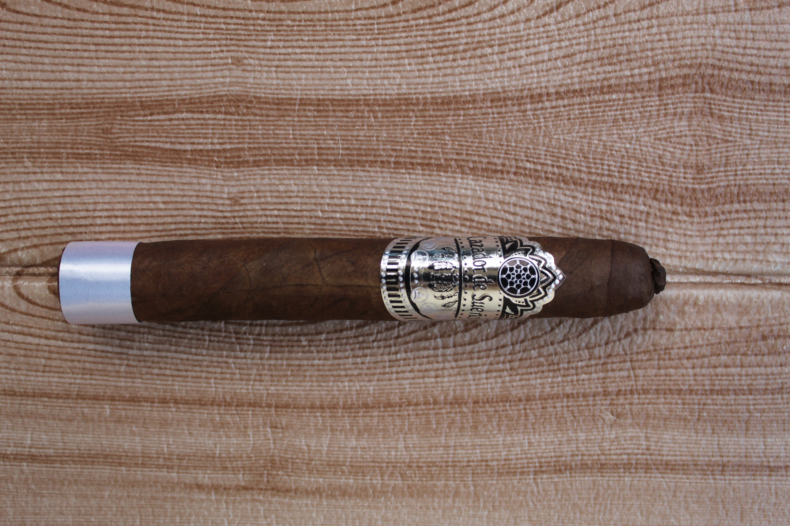
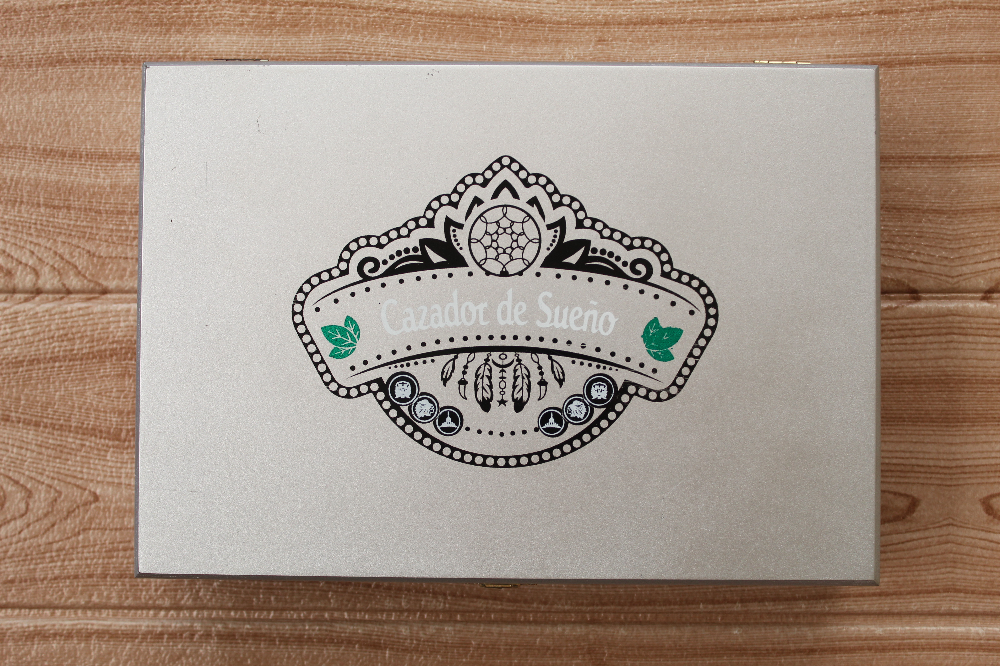
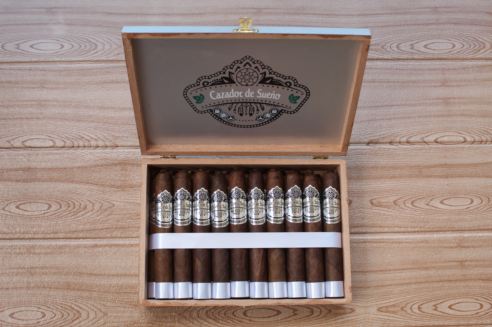

Formato / Vitola
Gran Toro 58 × 6″
Cuerpo pleno, imponente y de gran presencia.
Producción ultra limitada · Añejamiento prolongado



Joya de la corona de producción ultra limitada. Alta regalía, fortaleza fuerte y un añejamiento tan riguroso que solo unas pocas unidades ven la luz cada año.
Una obra de arte de producción ultra limitada. El tabaco utilizado pasa por un proceso de curación y una fermentación especial e histórica heredada de mi abuelo, realizada exclusivamente en las faldas de las lomas de Cerro Angola, Rincón de Piedras, San José de las Matas. Este microclima y método otorgan matices únicos e irrepetibles, imposibles de encontrar en marcas comerciales tradicionales.
Gran Toro 58 × 6″
Cuerpo pleno, imponente y de gran presencia.
San Andrés Madura
México — color chocolate profundo, aceitosa y con un dulzor terroso madurado a la perfección.
Doble Capote
Nicaragua y Camerún — una combinación magistral que aporta la fuerza estructural nicaragüense y el toque especiado y aromático del Camerún.
Selección Premium
Añejada con el secreto de la casa y el rigor del microclima de la sierra.
Fuerte
Intenso, complejo y sumamente sofisticado.
El Exquisito representa la obra cumbre de los puros dominicanos artesanales de edición limitada de Cazador de Sueños Cigars SRL. Este Gran Toro 58×6 con doble capote Nicaragua–Camerún es producido en cantidades ultra limitadas, creando una experiencia exclusiva para los coleccionistas más exigentes que buscan comprar puros premium online de auténtica rareza.
La fermentación histórica en la sierra de San José de las Matas, combinada con tabacos seleccionados de Nicaragua y Camerún, posiciona a El Exquisito entre los best Dominican cigars más exclusivos disponibles en el mercado internacional. Nuestros handmade luxury cigars de edición limitada son elaborados por maestros tabaqueros que crean verdaderas obras de arte tabacalera.
Este puro artesanal presenta una experiencia de fumada intensa y compleja, con matices únicos derivados de la fermentación histórica en la sierra dominicana. Las notas de tierra oscura, especias exóticas y el dulzor característico del doble capote crean una sinfonía de sierra, tierra y tiempo desplegada en tres actos de culto, ideal para cigarros finos para coleccionistas que valoran la exclusividad.
Cazador de Sueños Cigars ofrece envíos internacionales seguros de El Exquisito a los mercados más exclusivos del mundo. Dada su naturaleza de edición limitada, nuestros puros premium están disponibles para compras al por mayor selectas en:
Trabajamos con tabaquerías premium, lounges de ultra lujo, distribuidores mayoristas selectos y colecciones privadas en estos mercados, ofreciendo condiciones especiales para pedidos al por mayor de esta edición limitada y envíos seguros con todas las regulaciones internacionales cumplidas.
Al elegir comprar puros premium online de El Exquisito con Cazador de Sueños Cigars, obtienes:
Los matices únicos de la fermentación de San José de las Matas — una sinfonía de sierra, tierra y tiempo desplegada en tres actos de culto.
La entrada es potente e imponente, pero la fortaleza fuerte se presenta con elegancia sorprendente. Notas de tierra húmeda y madera ahumada evocan el aire puro de Cerro Angola, mientras destellos dulces y terrosos de la capa San Andrés Madura asoman con sutileza — como la bruma matinal sobre las lomas de Rincón de Piedras. Es el primer suspiro de un tabaco que ha esperado su momento con paciencia ancestral.
La evolución alcanza una complejidad indomable pero impecablemente equilibrada. El doble capote despliega su magia: cuero noble y café cargado entrelazados con la especia persistente del Camerún. La fermentación secreta revela entonces su riqueza mineral y matices únicos — registros que solo el microclima de la sierra y el método del abuelo pueden otorgar. Cada calada es un capítulo nuevo, como un segundo aroma en una copa de gran reserva reservada a pocos iniciados.
El desenlace es majestuoso: robusto, denso y cargado de carácter. Cacao amargo y frutos secos tostados construyen un clímax de refinamiento imperial, mientras un retrogusto prolongado deja una sensación limpia y aceitosa, inolvidable. Es una fumada de culto para verdaderos conocedores — el tributo final de un tabaco que nació en la montaña y maduró en el silencio de la tradición.
Gran Toro 58×6 - Edición de Autor
Consultas privadasPocas unidades al año. No por escasez fabricada, sino por tiempo exigido. El Exquisito no se produce: se espera — en las faldas de Cerro Angola, como enseñó el abuelo.